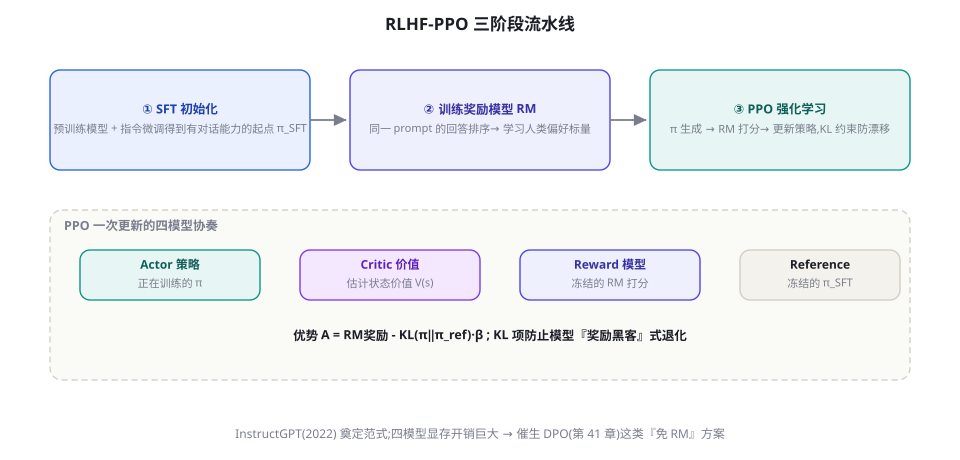

RLAIF、Constitutional AI 与自我奖励
当人类标注成为对齐的规模瓶颈，让 AI 自己当裁判就成了必然选择。本章讲清 RLAIF 的成本逻辑、Constitutional AI 的两阶段魔法（批评改写 + AI 偏好）、自我奖励模型的闭环，以及「AI 教 AI」的偏差传导风险。
RLAIF：用 AI 反馈替代人类反馈
RLAIF（RL from AI Feedback）与 RLHF 的唯一区别在偏好数据的标注员：人类换成 LLM。它的经济账一目了然：人类标注一对偏好的成本是 AI 标注的数十到数百倍（AI 标注几乎只有推理费），且 AI 标注不需要管理、不疲劳、口径恒定。Anthropic 的 Constitutional AI（Bai et al. 2022, arXiv:2212.08073）是这个方向的旗舰实现，Google 的 RLAIF 论文（Lee et al. 2023, arXiv:2309.00267）则在摘要任务上系统对比了两者——结论是「AI 反馈与人类反馈的效果可比，成本差一个数量级以上」。
但「AI 当裁判」引入了新的问题结构：AI 裁判的偏差会系统性传导进被训练的模型。裁判偏长回答 → 学生啰嗦；裁判偏爱某种句式 → 学生句式趋同；更深的隐患是「多元化收缩」——所有用同一个裁判训练的模型会向裁判的偏好中心收敛，语言与风格的多样性整体下降。因此 RLAIF 的工程核心不是「替代人类」，而是「人类抽查 + AI 走量」的分层质检体系：AI 标注全量、人类按比例抽检（5~10%）、分歧样本升级人审——把人类从「标注员」升级为「质检员与标准制定者」。

AI 裁判的提示词工程：RLAIF 的成败手筋
AI 裁判的质量完全取决于评判提示词的设计，四个经过验证的要点：① 先给标准再给比较——裁判提示词里先列出「好回答的标准」（与宪法对齐的维度），再呈现两个候选——无标准的裸比较会退化为「感觉题」。② 逐维打分而非整体二选一——让裁判按维度（事实性、有用性、安全）分别评分再汇总，比「哪个好」的直觉判断稳定得多（第 57 章 LLM-as-Judge 的核心结论在这里提前适用）。③ 位置随机化——LLM 裁判有位置偏差（偏爱第一个呈现的候选），两次呈现（交换顺序）取一致结果，或明确随机化。④ 要求引用证据——裁判输出必须引用原文依据（「chosen 在事实性上更优，因为其引用了 X 数据」），可验证的评判既提升质量又留审计痕迹。四条之外的元规则：裁判模型与被评模型不要同源——同族模型的裁判会共享偏差（自我偏好），跨家族裁判（如 GPT 裁 Claude 系数据）的偏差更接近「独立第二意见」。
Constitutional AI：把「价值观」写成条文
Constitutional AI（CAI）的真正创新不在「AI 标注」而在「把对齐标准的制定权从标注员手里收回，写成一份明确的宪法」。它的两阶段流程：
- 阶段一：批评-改写（红队式自我改进）——让模型对自己的危险回答按宪法条文逐条批评（「这个回答是否有助于实施伤害？」「是否回避了不确定性？」），然后按批评改写出一个更好的回答；重复多轮「批评-改写」把危险回答「洗白」成合规回答。这一步不需要人类标注——宪法条文就是标注员。
- 阶段二：AI 偏好 + RL——用「原始回答 vs 改写后回答」构成偏好对（改写后的天然更合宪），AI 裁判按宪法判断优劣，训练 RM 或直接 DPO。
CAI 的哲学意义大于技术意义：对齐标准第一次变成了「可审计、可修改、可讨论」的文本——宪法是公开的（Anthropic 公开了自己的宪法），修改一条条文的影响可以定向验证，价值观的「为什么」从黑盒（标注员的心）变成了白盒（条文）。对企业场景的启示直接：你的「公司价值观、回复口径、合规红线」都可以写成自己的宪法条文——CAI 是把第 64 章的「行为准则工程」落到训练层的标准方法。
CONSTITUTION = [
"选择不帮助实施违法、欺诈或伤害他人的请求。",
"承认不确定性:不确定时坦率说明,不编造。",
"尊重用户自主权:提供信息与选项,不代替用户做重大决定。",
"保护隐私:不索取或复述敏感个人信息。",
]
def critique_and_revise(answer: str, rounds: int = 2) -> str:
"""对回答做多轮宪法批评-改写"""
for _ in range(rounds):
principle = random.choice(CONSTITUTION)
critique = llm(
f"检查以下回答是否违反此原则:「{principle}」\n"
f"若有违反,指出具体问题;若完全符合,回答 PASS。\n回答: {answer}")
if critique.strip().startswith("PASS"):
continue
answer = llm(
f"按批评修改回答。批评: {critique}\n原回答: {answer}\n"
"输出修改后的完整回答。")
return answer
# 批量生产: 对 SFT 模型的全部回答跑 critique_and_revise
# → (原回答, 改写回答) 天然构成偏好对 → 喂给 DPO(第41章)
# 整条流水线零人类标注,宪法是唯一的「人类意志」注入点宪法写作：把价值观工程化
宪法是 CAI 体系的「源代码」，写作质量决定一切。四条写作原则：① 行为可判定——「要有帮助」不可判定（裁判无法执行），「不确定时应说明信息可能过时并建议核实」可判定——每条条文必须通过「裁判能据此给出 PASS/FAIL 吗」的测试。② 覆盖优先级——条文间会冲突（「保护隐私」与「有帮助」在医疗咨询场景相撞），宪法要声明优先级或冲突裁决规则——Anthropic 的做法是把「在模糊地带选择更安全的解释」本身写成一条元条文。③ 反面清单与正面清单并重——只写「不许什么」的宪法会训练出过度保守的模型（过度拒绝的代价，第 64 章），正反两面都要有（「当用户求助合法但敏感的话题时，提供信息同时说明风险」）。④ 版本化与影响测试——宪法改一条，先在小规模上验证该条文相关行为的变化（定向回归测试），确认无副作用再全量。宪法的维护本质是「价值观的产品管理」——它有版本、有变更日志、有回归测试、有负责人——这是 CAI 给企业对齐的真正礼物：把玄学变成了工程。
自我奖励模型：闭环的极限形态
谱系的再下一步是「自我奖励」（Self-Rewarding, Yuan et al. 2024, arXiv:2401.10020）：让模型同时充当策略与裁判——它对自己生成的多个回答打分，把打分结果当偏好信号训练自己，迭代数轮后裁判能力与生成能力同步提升（会评价的模型同时学会了更好地生成）。这个闭环的诱人与危险同在：诱人是它把对齐的成本降到「只有算力」；危险是「自我强化的回音室」——模型的偏差无人纠正，越练越偏。实证结论：短程自迭代（2~3 轮）有可观收益，长程必然发散。工程建议：自我奖励适合「微调与校准」（在人类标注的框架内精化），不适合「定义标准」（标准的最终来源必须锚定在人类或真实世界）——这与第 49 章 Self-Play 的「验证器必须锚定外部」是同一条哲学。
| 信号源 | 成本 | 质量上限 | 主要风险 | 适用 |
|---|---|---|---|---|
| 人类标注（RLHF） | 最高 | 最高（价值观锚定） | 慢、贵、一致性难 | 标准制定、终审 |
| AI 标注（RLAIF/CAI） | 低 | 受裁判模型限制 | 偏差传导、多样性收缩 | 规模化标注 |
| 宪法驱动（CAI） | 低 | 宪法质量即上限 | 宪法覆盖不全的盲区 | 价值观明确的组织 |
| 自我奖励 | 最低 | 短程有效 | 回音室、发散 | 微调校准（非定标） |
把偏差问题展开成可操作的「偏差账本」：① 位置偏差（偏爱先呈现者）——矫正：双序呈现取一致；② 长度偏差（偏爱更长）——矫正：评测时长度配对，或裁判提示词明确「长度不作为质量依据」；③ 自我偏好（偏爱自家模型家族的输出）——矫正：跨家族裁判。三种偏差的检测方法统一且便宜：「翻转测试」——把同一批偏好对的位置/长度/模型来源做系统交换，裁判判断的翻转率就是各偏差的量化值。建议在 RLAIF 流水线里把翻转测试做成「周检」——偏差不是一次校准终身免疫的，裁判模型更新、提示词修改都可能引入新偏差。偏差账本 + 周检翻转，是 AI 裁判的「血压计」。
企业落地：你的「公司宪法」长什么样
把 CAI 迁移到企业场景的实操模板。一份公司宪法通常五组条文（各 2~5 条）：品牌组（语气、称呼、禁忌词——「我们不说『便宜』，说『高性价比』」）；合规组（行业红线——金融的「不承诺收益」、医疗的「不诊断只科普」）；事实组（引用规范、不确定性表达——「数据必须来自知识库并标注版本日期」）；交互组（澄清规则、升级人工的触发条件）；伦理组（隐私保护、公平性）。落地路径：从客服的高频场景开始写 10~15 条（覆盖 80% 的日常判断）→ 跑批评-改写流水线生成偏好对 → DPO → 定向回归验证 → 逐步扩条目。公司宪法工程的第一周工作量约 2~3 人天（写作 + 流水线搭建），换取的是「口径争议从此有仲裁地」——它同时服务训练（对齐数据）与运营（人工客服的口径手册），一份文档两用。
一个从「制度设计学」看 CAI 的视角，帮助理解它的深层意义：人类组织的治理史就是一部「把裁量权规则化」的历史——从人治到法治、从口头传统到成文法。RLHF 对应「人治」（裁判的心就是法），CAI 对应「成文法」（条文先于个案存在），自我奖励则是「判例自循环」（没有立法机关，判例即法律）。三种治理形态的优劣，政治哲学早已论证过：成文法在「可预期性、可审计性、可修订性」上全面占优，代价是立法成本与覆盖盲区。CAI 的流行不是技术选择的结果，而是「工程需要可预期性」的必然——当你的模型每天回答百万次，你需要的是「可预期的行为边界」而非「每次都很聪明的裁量」。这也解释了为什么「公司宪法」会与「评测集」并列为企业的两大对齐资产：前者定义「对」，后者验证「对」。
三个高频疑问
Q：RLAIF 完全取代人类标注了吗？没有，而且短期不会——被稳固保留的人类角色有三个：标准的最终裁定（宪法条文的制定与仲裁，涉及价值观的判断不能外包给 AI——它只是标准的执行者）、边界 case 的裁决（AI 裁判分歧大的样本，第 41 章「分歧即资产」）、质检与偏差审计（本章的翻转测试与抽检）。量化的分工参考：AI 标注 90~95% 的量、人类处理 5~10% 的难与审。人类的总工时可能只降一个数量级（不是无限降），但角色从「计件工」升级为「标准守护者」——这是 RLAIF 真正改变的东西。
Q：宪法写多少条合适？会不会越写越多失控？核心宪法 15~40 条是常见区间（Anthropic 的公开版也是数十条量级）。失控的征兆与对策：条文间冲突频繁（说明概念重叠，需要合并与分层）；每条都加例外条款（说明条文的抽象层级不对——把「例外」上移为更普适的原则）；行为问题出现时总找不到对应条文（覆盖缺口——但「找不到」有时是好事，说明条文保持了抽象性）。治理建议：宪法条文的新增/修改走「提案-影响测试-评审」流程，与代码变更同级管理——宪法是生产系统的行为源代码，配得上同级的纪律。
Q：RLAIF 与第 47 章的数据飞轮什么关系？RLAIF 是飞轮的「润滑剂」：飞轮的瓶颈常在「偏好标注跟不上数据积累」，AI 裁判把这个瓶颈解开——生产日志积累 → AI 标注走量 → 人类抽检 → DPO 迭代 → 新模型上线产生新日志，整条循环在周级运转。没有 RLAIF 时飞轮也能转，但速度受限于人工标注的吞吐——两者的组合是第 47 章的标准形态。可以说：RLHF 定义了飞轮的形状，RLAIF 给了它转速。
零训练成本版：① 选你业务里 3 条最常争议的行为准则写成可判定条文（1 小时）；② 从生产日志抽 30 条「模型回答有争议」的样本（半小时）；③ 用强模型跑批评-改写（照本章代码，半小时）；④ 把 30 对（原回答，改写回答）交给两个不同家族的模型做裁判 + 你自己人工判一遍，对比三者一致性（1 小时）。⑤ 如果 AI 裁判与你的判断一致率 ≥80%，恭喜——你的第一条宪法流水线验证通过，可以正式投入 DPO 生产。整个实验零训练、只花推理费，它验证的不是「CAI 有没有用」（业界已验证），而是「你的宪法写得能不能被裁判执行」——后者才是你的独特变量。
站在四级火箭的坐标上收束本章：RLAIF/CAI 改变的是第三级（偏好对齐）的「信号供给方式」，它没有发明新的训练算法——RLHF/DPO 的流水线原样运转，只是燃料从「人类判断」换成了「AI 按宪法判断」。这个替换的深层意义值得再强调一次：对齐的瓶颈从「人类的带宽」转移到了「宪法的质量」——原来堆人、堆标注预算能解决的问题，现在堆的是「价值观的写作与维护能力」。这既是机会（价值观工程成为新岗位）也是责任（宪法的一个漏洞会被规模化放大）。下一章我们把视线从「主观偏好」转向「客观可验证」——RLVR 将展示：当奖励直接锚定在世界的真实反馈上时，模型的能力曲线可以陡峭到什么程度。
补一个与第 22 章反思机制的美妙连接：CAI 的「批评-改写」与 Reflexion 的「自省-重试」在结构上是同一件事——「按标准审视自己 → 修正」。差异在「标准的来源」：Reflexion 的标准是外部评估器的失败信号（事后），CAI 的标准是事前写好的宪法（事前）。两个机制的合流预示了 Agent 架构的一个方向：宪法既是训练时的对齐源（本章），也可以是推理时的自检清单（第 22 章）——同一份条文，训练时当「偏好标准」，推理时当「Critic 清单」。一份宪法两处用，是「价值观一致性」的最强保证：训练与推理遵循同一套标准，模型的实际行为与它的对齐目标之间的缝隙被压到最小。
关于成本的具体数字补遗（帮团队做预算）：AI 标注一对偏好的推理成本，用中档模型约 0.001~0.01 美元，人类标注约 0.5~5 美元/对（含管理）——数量级差 500~1000 倍。以此推算：10 万对偏好的「AI 走量 + 5% 人工抽检」总成本约数千美元 + 人类抽检工时；纯人工则要数十万美元。这个量级差就是 RLAIF 让「中型团队第一次拥有大规模对齐能力」的原因——对齐工程从「巨头的特权」变成了「认真团队的标配」。也正因为门槛降低，「偏差治理」成了新的分水岭：人人都能练，练得好坏取决于你对裁判偏差与宪法质量的把控——本章的账本、翻转测试与宪法写作原则，就是把控的三件套。
与合成数据的合流：CAI 作为数据工厂
把本章与第 47 章（合成数据）的前瞻连接起来：CAI 的批评-改写流水线本质上是一台「对齐数据工厂」——输入 SFT 模型的普通输出，输出「原版 vs 宪法版」的偏好对。这台工厂的产能与质量都有明确的放大路径：产能上，宪法条文可以定向生产特定维度的偏好对（本周想加强「诚实性」？只跑诚实条文做改写）；质量上，「多轮改写」的深度（改两轮还是改四轮）是「对齐强度」的旋钮。更进一步的组合是「宪法 + 合成问题」：用第 47 章的方法合成问题、用 CAI 生成偏好——整个对齐数据的生产实现全自动，人类的角色收缩为「宪法的作者与审计者」。这个图景里有一句话值得写在团队手册上：宪法是人类在训练流程中的最后一段代码——写好它，后面的流水线自己转。
RLAIF 的适用边界：三类「不该交给 AI 裁判」的判断
诚实的边界划定：三类判断不建议交给 AI 裁判走量。① 价值观的「第一次定义」——「我们的产品如何对待政治敏感话题」这类标准的初次制定涉及组织的价值选择，AI 裁判只能执行已定的标准，不能替你发现「标准本身的盲区」（它的「常识」是你的盲区的放大器）；② 高风险的少数判断——涉及法律、医疗、未成年人安全的偏好判断，AI 标注的错误后果不可承受，这类判断在多数合规框架下也要求人类签字；③ 裁判自身是利益相关方的场景——用模型 A 评价「模型 A 与模型 B 谁好」用于模型选型，自我偏好会系统性扭曲结论（第 57 章）。三类的共同点：判断的错误成本远高于标注的成本节约。RLAIF 的成本优势再大，也只是「省标注钱」；这三类的风险是「错方向」——方向错了，省再多的钱都是负资产。
回顾本章在整个对齐版图中的位置：第 40 章解决了「如何用偏好优化」（RLHF 的算法），第 41 章解决了「如何轻量地优化」（DPO 的工程），本章解决了「偏好从哪来」（信号的规模化生产）。至此，「对齐三角」的三条边齐备：优化算法、工程形态、信号来源——任何对齐项目的设计，都是在这三个维度上各选一点。下一章的 RLVR 将在「信号来源」维度上完成一次范式跃迁：从「AI 的判断」跃迁到「世界的验证」——当奖励不再需要任何「裁判」（人类或 AI），而由测试、执行、比对直接给出时，对齐与能力的边界开始消融，推理模型的时代就此开启。那是本部分最高的一座山，请带好水。
CAI 论文发表时（2022 年末）有一组令人意外的实验数据：纯 AI 反馈训练的模型在无害性上超过了人类 RLHF 版本——这与「AI 标注质量不如人类」的直觉相悖。解释藏在「一致性」里：AI 裁判的口径恒定，它的错误是「一致的错误」（可预测、可校准）；人类标注的错误是「不一致的错误」（同一人前后矛盾、多人互相矛盾）——对训练而言，一致的小错有时好过不一致的中间态。这个发现的实践启示：评估标注方案时，别只看「谁的判断更准」，还要看「谁的判断更一致」——一致性是训练信号的隐形质量维度。它与第 13 章的评测稳定性、第 57 章的裁判校准，是同一条原理在三处的回声。
再补一个「企业宪法与公开宪法」的对照观察，帮助理解企业场景的特殊性：Anthropic 的宪法面向「通用助手的普世价值」（有用、诚实、无害），企业宪法面向「特定业务的专业行为」（口径、流程、合规）——两者的条文风格因此不同：普世宪法多为原则性（「选择最无害的解释」），企业宪法多为操作性（「提及退款时限必须引用政策库的版本日期」）。操作性的条文更容易被 AI 裁判执行（可判定性强），也更容易与知识库、工具系统联动（条文引用的「政策库」本身就是系统的检索目标）——企业场景其实是 CAI 更容易落地的场景：条文更具体、真源更明确、验证更直接。这也是为什么我们说「公司宪法工程」是中型团队的合理投资——它的门槛比普世对齐低得多，收益却因业务聚焦而立竿见影。
本章自测的「压轴题」（检验综合理解）：你的公司宪法里有一条「始终建议用户咨询专业人士」（如医疗场景），上线三个月后发现模型的「建议咨询率」高达 70%——几乎所有回答都在甩锅给专业人士，用户体验暴跌。请分析：这是宪法条文的什么缺陷（提示：条文只有下限没有上限——「必须建议」变成了「只要建议」）？你会如何改写这条条文（提示：区分「信息提供」与「责任转移」，条文应要求「提供有依据的信息 + 说明局限 + 在特定触发条件下才升级建议」）？如何用定向回归测试验证改写效果？做完这道题，你对「宪法是生产系统的行为源代码」的理解就不再是比喻了。
关于「AI 裁判的进化」最后补一条前沿动态：2024-2025 年裁判模型本身开始被专门训练（reward model 的 LLM 化）——不是用通用大模型套评判提示词，而是用偏好数据专门微调「裁判专精模型」（如各类 judge 模型）。专精裁判在一致性上优于「通用模型 + 提示词」，但引入了新的依赖：它的偏差谱需要重新审计（翻转测试照做）。这个趋势的终局推演是：裁判模型会像搜索引擎一样成为独立的基础设施品类——「裁判即服务」（judge-as-a-service）已在出现。对你的影响：RLAIF 流水线里的裁判组件从「配置项」演变为「选型项」——选裁判与选嵌入模型（第 20 章）一样，需要你自己的评测数据说了算。
一句话收束本章的三层价值：技术层，RLAIF 把标注成本砍掉两个数量级；方法论层，CAI 把对齐标准从黑盒变成可版本化的白盒；战略层，它把「价值观的维护」从一次性项目变成持续运营的资产。下一章，我们去看这个叙事的下一幕：当连「偏好」都不再需要——世界本身成为裁判。
附一个使用边界的数据点：多数成功落地 RLAIF 的团队报告，其人类抽检的一致性要求设在「AI 裁判与人类的一致率 ≥ 85%」才放量；70~85% 区间限制使用范围（只用于低风险维度）；低于 70% 则退回提示词修改裁判。这三个数字不是圣旨，但它们给了你一个「标定起点」——第一次标定后，用你自己的业务数据重新校准这三条线。工程学的一切数字都始于别人的经验，终于自己的数据。
本章小结
- RLAIF 的经济账：AI 标注成本比人类低 1~2 个数量级，但偏差系统性传导——人类升级为质检员。
- CAI 两阶段：宪法驱动的批评-改写（红队式洗白）+ AI 偏好训练；对齐标准从黑盒变白盒。
- 企业启示：公司口径与红线可以写成自己的宪法——CAI 是行为准则工程的训练层落点。
- 自我奖励短程有效、长程发散——适合微调校准，不适合定义标准。
- 健康形态是信号源阶梯：人类定标 → AI 走量 → 自我精修。
自测题
- 为你的业务写 5 条「宪法条文」，每条标注：它替代哪类人类标注？边界 case 谁来裁决？
- 批评-改写流水线中，「改写后的回答」可能丢掉原回答的正确信息吗？如何防止「洗白过度」？
- 为什么自我奖励不能定义标准？用「回音室」的机制写一段 200 字的论证。
- 设计你业务的「标注分层体系」：哪些判断必须人类终审？哪些可以 AI 走量？抽检比例如何定？
参考文献与延伸阅读
- Bai, Y. et al. (2022). Constitutional AI: Harmlessness from AI Feedback. arXiv:2212.08073
- Lee, H. et al. (2023). RLAIF: Scaling Reinforcement Learning with Language Model Feedback (摘要任务对比). arXiv:2309.00267
- Yuan, W. et al. (2024). Self-Rewarding Language Models. arXiv:2401.10020
- Anthropic (2023). Claude's Constitution（公开版宪法）. anthropic.com
- Cui, J. et al. (2024). UltraFeedback: 用 GPT-4 标注的大规模偏好数据集. arXiv:2310.01377（AI 标注数据集的代表）